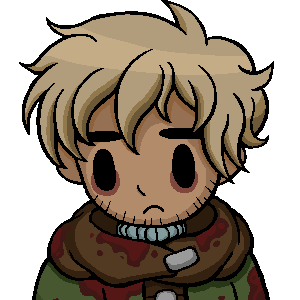
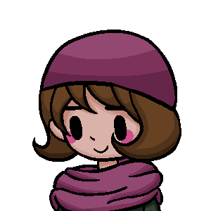
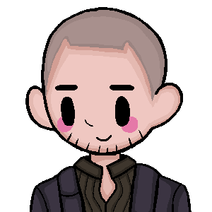

Bachelor Daniil Dankovsky is a famed thanatologist, having dedicated his life to study the possibilities of immortality. Throughout the story, he is tasked with discovering a vaccine for the plague outbreak.
Character Bio Artemy is the son of Isidor Burakh, the Town's only physician and a menkhu - the spiritual leader of the Kin. Through the story, he is tasked with discovering a solution for the outbreak.
Character Bio Clara — also known as the Changeling — is a mysterious young girl who claims to know how to create miracles. She is to be one of three playable characters, alongside the Bachelor and the Haruspex.
Character Bio Stanislav Rubin, or Stakh as his friends call him, is a faithful student of Isidor Burakh. After the death of his teacher, he becomes the only local physician. He is Artemy Burakh's best friend and surrogate brother.
Character Bio